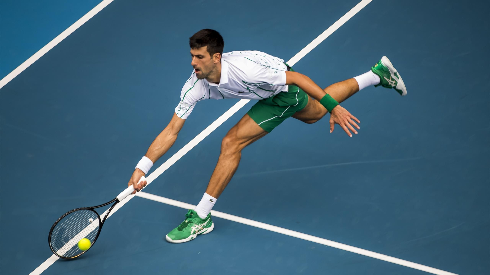
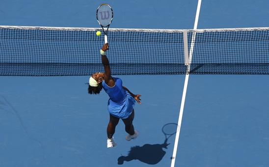
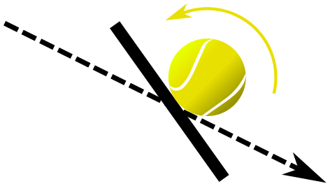

Tenis
El tenis, también llamado tenis de campo,2 es un deporte de raqueta practicado sobre una pista rectangular (compuesta por distintas superficies, las cuales pueden ser cemento, tierra batida o hierba), delimitada por líneas y dividida por una red.3
Se disputa entre dos jugadores (individuales) o entre dos parejas (dobles). El objetivo del juego es lanzar una pelota golpeándola con la raqueta de modo que rebote en el otro lado pasando la red dentro de los límites permitidos del campo del rival, procurando que este no pueda devolverla para conseguir un segundo rebote en el suelo y por ende un punto.

Reglamento del tenis
- El jugador solo puede golpear la pelota una vez por turno. (Pero si gana un punto puede volver a golpear la pelota)
- El juego lleva una puntuación inusual: el primer punto se contabilizará como 15 puntos, el segundo como 30 puntos y el tercero como 40 puntos.
- El partido se gana con 2 sets o con 3 sets dependiendo si se juega al mejor de 3 o al mejor de 5.
- La pelota solo puede ser rebotada una vez antes de ser impactada.
- Ningún jugador podrá tocar la red, esto se considera punto perdido para el mismo.
- Los jugadores van cambiando de lado de pista a lo largo del partido, en los juegos determinados, al final del primero, tercero y quinto juego.
Medidas de la cancha
El tenis se juega en una cancha (llamada pista en España) de forma rectangular, de 23,77 metros (78 pies) de longitud por 8,23 m (27 pies) de ancho. Para el partido de dobles la cancha será de 10,97 m (36 pies) de ancho.
Las líneas que limitan los extremos de la pista se denominan líneas de fondo y las líneas que limitan los costados de la pista se denominan líneas laterales. A cada lado de la red y paralela a ella, se trazan dos líneas entre las líneas laterales a una distancia de 6,40 m a partir de la red.
Estas líneas se llaman líneas de saque o de servicio. A cada lado de la red, el área entre la línea de servicio y la red queda dividida por una línea central de servicio en dos partes iguales llamadas cuadros de servicio. La línea central de servicio se traza paralelamente a las líneas laterales de individuales y equidistante a ellas.
Cada línea de fondo se divide en dos por una marca central de 10 cm de longitud, que se traza dentro de la pista y es paralela a las líneas laterales de individuales. La línea central de servicio y la marca central son de 5 cm de anchura. Las otras líneas de la pista son de entre 2,5 y 5 cm de anchura, excepto las líneas de fondo que pueden ser de hasta 10 cm de anchura. Todas las medidas de la pista se toman por la parte exterior de las líneas. Todas las líneas de la pista tienen que ser del mismo color para que contrasten claramente con el color de la superficie.
El tenis puede ser practicado en distintas superficies; ya conocemos la primera en que se comenzó a jugar el tenis, hierba natural. Existen también otras que con el paso del tiempo se han ido popularizando, como son las pistas duras, tierra batida, tenis quick...
Estas últimas son elegidas para la apertura de clubes, ya que son las más económicas. Actualmente no figura ninguna competición profesional que se realiza en dicha superficie.
Las pistas de tenis que tienen un mayor coste económico en su mantenido son las de tierra batida, seguida de hierba natural.
La red del tenis
La pista está dividida en su mitad por una red suspendida de una cuerda o un cable metálico, cuyos extremos están fijados a la parte superior de dos postes o pasan sobre la parte superior de dos postes a una altura de 1,07 metros. La red está totalmente extendida, de manera que llena completamente el espacio entre los dos postes de la red, y la malla es de un entramado lo suficientemente pequeño para que no pase la pelota de tenis. La altura en el centro de la red es de 0,914 m, en donde está sostenida mediante una faja. Hay una banda cubriendo la cuerda o el campo metálico y la parte superior de la red. La faja y la banda son blancas por todas partes. El diámetro máximo de la cuerda o cable metálico es de 8 mm. La anchura máxima de la faja es de 5 cm. La banda es de entre 8 y 10,35 cm de anchura a cada lado.
Puntuación
Un partido de tenis está compuesto por parciales (sets en inglés). El primero en ganar un número determinado de sets es el ganador. Cada set está integrado por juegos. En cada juego hay un jugador que saca, el cual se va alternando. A su vez, los juegos están compuestos de puntos, que son 15, 30, 40 y el punto de juego.
La cuenta de los puntos es bastante particular: cuando un jugador gana su primer punto, su tanteador es 15, cuando gana 2 puntos, 30, y cuando gana 3 puntos, 40. Por ejemplo, si el sacador de ese juego lleva ganados 3 puntos y el receptor 1 punto, el marcador es de 40-15. Siempre se nombra en primer lugar la puntuación del sacador. Cuando ambos jugadores empatan a 40, se dice que hay deuce o «iguales». El primer jugador o equipo que gane un punto después del deuce, logra una «ventaja» y, en caso de ganar el siguiente punto, se lleva el juego. De lo contrario se vuelve a estar en deuce hasta que se logre la diferencia de dos puntos. El primer jugador que supera los 40 puntos gana el juego.
El primero en ganar 6 juegos, con una diferencia mínima de 2 con respecto a su rival, es el ganador del set; en caso de que ninguno de los dos jugadores o equipos tenga una ventaja de dos juegos al llegar a seis (6-5), se juega un juego más para conseguir la diferencia de 2 juegos (7-5). De darse el empate (6-6), se jugará un juego de «desempate» o tie-break.
Desempate
Si el reglamento del torneo establece un tope de juego, o sea si hay un empate entre dos jugadores en un set, entonces habrá que jugar un juego especial denominado «muerte súbita», «juego decisivo», «desempate» o tie-break, en el cual el resultado se decide mediante puntos correlativos (uno-cero, dos-cero, tres-cero, etc.) hasta llegar a 7 tantos, con diferencia de 2. Si se llega a 7 puntos sin diferencia de 2 (por ejemplo: 7-6), el juego se prolongará hasta que uno de los dos jugadores obtenga dicha diferencia y consiga la victoria. La anotación de un set que se ha decidido en el tie break será 7-6, acompañada abreviadamente por el número de puntos obtenidos por el perdedor del mismo entre paréntesis; p. ej. si el jugador perdió el juego decisivo por 7-3, la anotación del set será: 7-6 (3).
Origen del tanteo
La inusual y exclusiva forma de anotar el tanteo en tenis (y otros deportes de raqueta inspirados en él) proviene del sistema sexagesimal. Al parecer, antiguamente el tanteo de cada juego se llevaba con un reloj y por cada punto obtenido se movía la aguja un cuarto de vuelta. Así, con el primer punto la aguja se desplazaba al 15, con el segundo al 30, con el tercero al 45 y con el cuarto se cerraba el círculo y se concluía el juego. Con el tiempo y por economía del lenguaje, el parcial "45" se convirtió en "40", dando origen al actual modo de llevar el tanteo: 15, 30, 40, ventaja en caso de empate y juego.
Históricamente, esa puntuación de 15-30-40-juego y luego seis juegos para un set viene de la astronomía antigua en la que se usaba un Sextante para medir la elevación del sol.
El sextante se divide en 4 partes (15º-30º-45º-60º), y es la sexta parte de una circunferencia de 360º (6 juegos = 1 Set = 360º). La puntuación corresponde a las dichas mediciones que eran en esa época tan usuales como para nosotros el sistema decimal. Luego el 45º, que en inglés es Forty Five, se dejó en forty para comodidad del árbitro.
Técnica y golpes
El tenis es un deporte que requiere que los jugadores dominen técnicas como son: golpes, empuñaduras, efectos, posiciones corporales y desplazamientos corporales, además de necesitar resistencia física para aguantar peloteos largos o fuertes. Durante el partido se utilizan muchos tipos de golpes, cada uno con sus respectivas técnicas; los golpes son: el saque, la derecha (forehand), el revés, el globo, la volea, el slice, la dejada y el remate (smash).
Saque
El saque es el golpe más importante del tenis, ya que este da comienzo al punto, y su correcta aplicación puede permitir a la persona que saca quedar en una posición de ventaja tras la devolución o bien lograr un saque ganador o ace (punto ganado sin que el rival impacte la pelota), o que tras el impacto del adversario la pelota no llegue a pasar la red o esta se vaya fuera de los límites de los ejes (en cuyo caso no se denomina ace, sino saque ganador). Al tener buen saque, el tenista aprende a acabar mejor los golpes efectuados sin que la pelota toque suelo y pudiendo dificultarle al contrincante marcarle un punto después de que le hagan una cortada.
El segundo saque suele realizarse buscando mayor seguridad en el resultado. Para ello suelen hacerse saques liftados, cortados o con kick (que es lo mismo que liftado) para provocar la mayor dificultad al rival, ya que esos saques suelen ser peligrosos al cambiar la dirección de la pelota o la rapidez después del bote. Uno de los cambios de cómo se hace cada saque es que el cortado, intenta hacer que la pelota corra por las cuerdas de un lado al otro de la raqueta en posición vertical, y el liftado es igual pero en forma horizontal.
Derecha o drive
El drive o derecha es el golpe básico. Consiste en golpear la pelota después del bote, de forma directa, del mismo lado del brazo hábil del jugador. Para la mayoría de los jugadores es el arma principal para ganar un punto y el de mayor control. Para realizar un correcto forehand, se debe estar perfilado a la pelota; en el caso de un diestro, el golpe empieza en el lado derecho del cuerpo, continuando a través del mismo hasta impactar la pelota y terminando en la parte izquierda del cuerpo. El impacto debe darse en la zona comprendida entre hombro y cadera, y el movimiento se realiza de abajo arriba. Una vez que la pelota impacta en la raqueta, el tenista pasa el brazo derecho adelante cerrando el golpe.
En el momento que llega la pelota en altura, el tenista toma la decisión de dar un golpe potente o cruzarla a algún lado. Es el golpe más fácil de aprender, al ser también el más natural. Hay un error común en países de habla hispana de llamar "drive" al forehand o derecha. En los diccionarios de tenis en inglés "drive" es el golpe que se hace desde el fondo de la cancha con potencia, luego del bote. Por lo tanto hay "drive" de derecha y "drive" de revés. Entre los mejores golpeadores de derecha ya sea por potencia, precisión, o ambas, se encuentran Pete Sampras, Roger Federer, Ivan Lendl, Juan Martín del Potro y Fernando González.
Volea
La volea o golpe de aire es el golpe que se realiza antes que la pelota rebote en el suelo. Es ejecutado normalmente cerca de la red para definir un punto. A su vez podemos encontrarnos dos tipos de voleas, profundas y cortas. Cada una de ellas dependerá del lugar en el que se produzca el bote de la pelotaː las voleas cortas se producen cuando la pelota bota a la altura del cuadro de saque y las profundas, cuando el bote se produce detrás del cuadro de saque. Debido a la mayor cercanía del jugador al contrincante, es un golpe que requiere ser realizado con gran velocidad y reflejo. La raqueta debe encontrarse en todo momento al frente y alto.
El golpe se realiza llevando adelante el pie opuesto al lado donde se va a impactar la pelota, simultáneamente con el perfilado del cuerpo, de modo que la raqueta pueda hacer un breve movimiento atrás para impactar la pelota adelante y de arriba abajo, aprovechando la fuerza que la propia pelota trae, en lo posible sin aplicar energía extra y sin flexionar la muñeca. El golpe que se utiliza para llegar a la red en una jugada se denomina approach según la trayectoria del golpe se realizará sin dificultad. Entre los mejores voleadores de la historia se encuentran Stefan Edberg, John McEnroe, Boris Becker, Patrick Rafter, Pete Sampras, Roger Federer, Pat Cash y Radek Stepanek.
Revés
El revés es el golpe al lado opuesto al forehand o derecha. A pesar de ser un golpe de mecánica natural, suele ser uno de los que más cuesta llegar a dominar cuando se empieza a jugar al tenis. Es muy importante la posición del cuerpo, que debe ser colocado de perfil, utilizándose como técnica para ello bajar el hombro para apuntarlo en dirección a la red, mientras que el brazo derecho en los diestros e izquierdo en los zurdos, pasa sin ser flexionado por debajo del mentón, para ubicarse atrás antes de retornar para impactar la pelota, siempre delante del cuerpo, al igual que en el forehand o derecha, que el peso del cuerpo se traslade de atrás adelante en el momento de impactar la pelota.
Décadas atrás, el golpe de revés se enseñaba a impactarlo tomando la raqueta con una sola mano (unos grandes exponentes de esta técnica fueron Ivan Lendl, Gustavo Kuerten, Ken Rosewall, Guillermo Vilas, Gastón Gaudio, Stefan Edberg, Pete Sampras y Boris Becker. En la actualidad lo son Stanislas Wawrinka, Roger Federer y Richard Gasquet. Hoy en día el revés a dos manos está ganando cada vez más terreno: jugadores como Rafael Nadal, Juan Martín del Potro, Novak Djokovic y los ya retirados David Nalbandián y André Agassi hacen uso de este golpe. Vale la pena recordar a Jimmy Connors y Björn Borg, cuyos golpes de revés a dos manos inspiraron la popularización que actualmente tiene esta forma de golpeo.
Dejada
La dejada o drop shot (del inglés drop, ‘dejar caer’) es un golpe en el que se le resta potencia a la pelota con la intención de que caiga lo más cerca posible de la red, del lado contrario. Se realiza habitualmente de revés o backhand, aunque es posible hacerlo también de derecha o "forehand". La preparación del golpe es similar a la preparación del forehand (o revés), debiendo hacerse en el último momento, para sorprender al contrincante, que espera un tiro al fondo. Al momento del impacto, en lugar de realizarse el swing amplio, la raqueta debe caer de manera perpendicular a la pelota, con un giro de muñeca para producir el efecto de goteo que hará a la pelota caer y pasar bien la red.
Se utiliza generalmente cuando el tenista rival se encuentra muy por detrás del fleje del fondo de la pista, y no es un golpe que se deba usar con mucha regularidad, ya que el objetivo es sorprender al rival.
Resulta vital que el golpe sea bajo y corto, para así evitar que el contrincante llegue a la pelota antes del segundo bote, porque de lo contrario le quedará un golpe fácil cerca de la red. Simultáneamente, el jugador puede acercarse a la red para prevenir una contradejada.
Contradejada
La contradejada es la respuesta a una dejada, a la que el jugador llega poco antes del segundo rebote. Como habitualmente la pelota se encuentra muy baja y cerca de la red, no es posible recurrir a un golpe potente, por lo cual, el jugador solo tiene la opción de dar un golpe suave sobre el fondo, es decir, una nueva dejada de respuesta, esta vez hecha desde cerca de la red.
Remate o smash
El smash o remate es un golpe que se efectúa sobre la cabeza con un movimiento similar al saque. En general se puede golpear con gran fuerza de manera relativamente segura y es a menudo un tiro definitorio. La mayoría son realizados cerca de la red o a mitad de la pista antes del pique de la pelota. Suele ser la respuesta a un globo realizado por el oponente que no tuvo la suficiente altura. También puede hacerse desde la línea de base tras el pique, aunque es menos definitorio. Es un golpe alto, realizado de arriba abajo, antes de que la pelota bote, o después de que lo haga, pero únicamente en caso de que este lleve una parábola más vertical que horizontal. Para que sea efectivo, es indispensable que sea muy potente y que no dé oportunidad de respuesta al contrario, ya que se trata siempre de un golpe de definición. Se realiza cuando la pelota viene muy alta, a la altura del brazo extendido del jugador.
El golpe se prepara perfilando el cuerpo, llevando la raqueta atrás y colocándola detrás de la nuca, mientras la mano libre apunta a lo alto, hacia la pelota. En el momento del impacto, el pie trasero pasa adelante, al mismo tiempo que la raqueta sale de atrás del cuerpo en un movimiento similar al del saque. Al momento de impactar la pelota, la muñeca debe flexionarse abajo, terminando el golpe de manera parecida al saque. La pelota tiene que rebotar antes de que el contrario la devuelva.
Globo
El globo es un golpe sencillo que se utiliza para pasar la pelota por encima del jugador contrario. Se ejecuta tanto de derecha como de revés. Incluso existe (su uso no es tan frecuente) la volea globeada. Su ejecución consiste en impactar arriba la pelota (a diferencia de las demás ejecuciones que se hacen adelante); con esto se logra pasar a un jugador que está parado en la zona de la volea o bien hacer un juego defensivo de fondo.
Efectos sobre la pelota
El desarrollo de la técnica ha llevado a aplicar con diferentes modos de golpe, diferentes efectos sobre la pelota, de tal modo que dichos efectos y las consiguientes variaciones de trayectoria y velocidad dificulten la devolución del rival. Los mismos se obtienen con diferentes empuñaduras y formas de impactar la pelota.
Cada uno de los golpes, con sus respectivas trayectorias según el efecto aplicado sobre la pelota y sus respectivos tipos de bote contra la superficie, se explican a continuación.
Golpe liftado
El golpe liftado o con top spin (literalmente en inglés «efecto desde arriba») se ejecuta mediante la aplicación de una trayectoria de la raqueta anterior y posterior al golpeo (swing) de abajo arriba. Antes del impacto con la pelota, la cabeza de la raqueta está por debajo de la trayectoria de la misma y, tras el impacto, el swing finaliza por encima de esa altura. Este golpe impone a la pelota un efecto de rotación adelante, que hace que tras el bote, esta salga despedida arriba y adelante, obligando al rival a golpear bien a una altura superior a la normal —muchas veces por encima del hombro—, lo cual le impide ejecutar un golpe agresivo, o bien le obliga a «atacar» la pelota en su trayecto ascendente tras el bote, lo que supone un mayor riesgo de error.
Este tipo de golpe es el más usado, pues tiene, además, la ventaja para el jugador que lo ejecuta de ofrecerle un «margen de seguridad» más amplio, puesto que la trayectoria que se le impone a la pelota es más elíptica y esta pasa a una mayor altura sobre la red que con el golpeo plano o el cortado.
El motivo por el cual logramos imprimir una velocidad angular es la fricción que existe (durante un período muy pequeño) entre la pelota y las cuerdas de la raqueta, estas últimas colisionan casi tangencialmente respecto de la pelota. Esto último es lo que produce un momento de la fuerza sobre la pelota, la cual pasa a tener energía cinética de traslación más energía cinética de rotación. Dicha velocidad angular supone una fricción aerodinámica, de modo que la pelota va empujando (por su parte posterior) constantemente el aire que se le presenta como obstáculo arriba (la fluidodinámica de Bernouilli demuestra este suceso), por la tercera ley de Newton (acción-reacción), la pelota recibe la misma respuesta por parte del viento pero de sentido contrario. Por esto mismo, la pelota adoptará una trayectoria parabólica mucho más pronunciada que en el caso de una colisión plana con las cuerdas.
Finalmente, la velocidad angular que aún conserve la pelota al colisionar con la superficie, se verá reducida considerablemente por la fricción estática con el suelo, haciendo una fuerza atrás, y de nuevo por la tercera ley de Newton, el suelo se la devolverá en sentido pitido.
Golpe cortado
El cortado (en inglés «slice», ‘cortar en rebanadas’, o «backspin», ‘rotar atrás’) es el efecto inverso al liftado: la pelota adquiere una rotación «atrás» que la lleva a adoptar una trayectoria más baja al botar, obligando al contrario a tener que impactarla más bajo. El efecto se obtiene impactando a la pelota desde arriba y estirando el brazo como si se atravesara la pelota y se la siguiera en su recorrido.
Esto hace que la pelota rote de arriba abajo vista desde atrás (nótese que esto no cambia el sentido de rotación de la pelota si el oponente puso efecto liftado a la suya). Debido al efecto Magnus, que en este caso imprime una fuerza neta a la pelota dirigida arriba, un golpe cortado hace que la pelota parezca «flotar» y vuele más lenta. La menor velocidad de la pelota hace que uno de los usos del cortado sea para tener más tiempo de volver a ponerse en posición o acercarse a la red.
Golpe plano
El golpe plano es aquel que se realiza sin imprimirle ningún efecto a la pelota. En general es muy efectivo cuando se realiza desde una altura mayor a la red, de arriba abajo.
Los golpes que pueden ejecutarse de esta manera son el forehand o derecha, el revés, el saque y la volea (esta debe ejecutarse de manera plana «siempre», exceptuando las veces que la volea se quiera muy suave, es decir, haciendo un drop shot de volea.